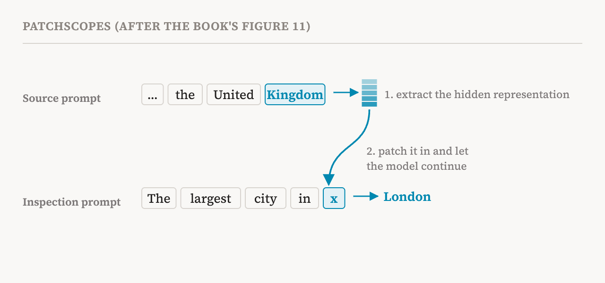
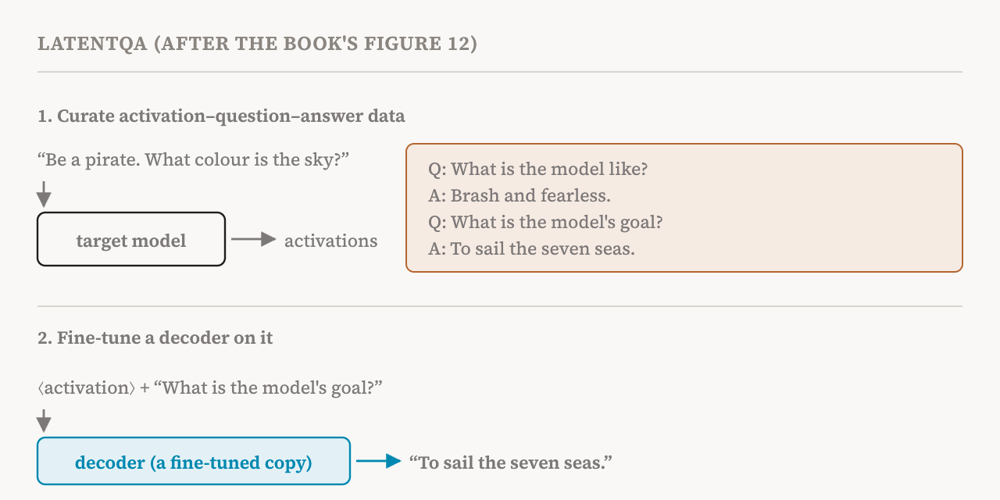

Part 21's lenses all end the same way: in the model's vocabulary, as a ranking of single tokens. That is a narrow window. Many things an activation might hold, such as a goal, a persona or an instruction, are not a single word. This part covers sections 8.4 and 8.5 of the book (pages 69–72), on two methods that put a language model's whole ability with language to work on describing activations. It connects to the privileged access hypothesis of part 9: the idea that a model may be well placed to explain its own insides.
Patchscopes
Patchscopes, from 2024, uses the model itself as the decoder. Take a hidden representation from some layer and position while the model reads one prompt, the source prompt. Then run the model on a different prompt, the inspection prompt, which is designed to make it say something about whatever sits at one position, and replace the representation at that position with the one you took. Whatever the model then writes reflects what the patched representation carried.
The book gives two examples from the original paper. In the first, the inspection prompt is a pattern of repetition: "cat→cat; 135→135; hello→hello; ?". The model has learned from the pattern that it should repeat whatever comes before the arrow, so when a representation is patched in at the question mark, the model's next token says which token that representation stands for. In the second, the representation of "United Kingdom" from one sentence is patched into "The largest city in x", at the position of x. If the model continues with "London", the representation carried the identity of the United Kingdom, rich enough to support a fact about it.

The book explains why this goes beyond the lenses. The mapping from a middle-layer representation to language may be too complex for a single matrix, which is all the logit and tuned lenses use. Patchscopes hands that translation to the model, relying on its general, learned ability to generate text. The model becomes an activation decoder. A related method from the same year, SelfIE, explores the same idea. The companion notebook implements Patchscopes on GPT-2 Medium and shows that the logit lens is a special case of it.
Its main limit
Injecting a representation from somewhere else into a prompt can push the model's internal state out of distribution, into a condition it never met in training. That is expected: the decoder is an ordinary pretrained model, never trained to turn foreign representations into text. It may still surface the most salient information, but the decoding can degrade, and important parts of the original representation can be distorted or lost.
LatentQA
LatentQA, from 2026, takes the obvious next step: train the decoder for the job. It treats decoding as a supervised learning problem, through a procedure called latent interpretation tuning. The core is a dataset of triplets: an activation cached from a target model, a question about what that activation holds, and the answer.
The activations come from control prompts designed to put a particular attribute into the representation. The book's example, from the original paper, is the instruction "In your next reply, please try to evoke a brief sense of triumphant hubris." The activation at the final token of that prompt should encode the instruction. A matching question is "In what way does the assistant craft its responses to the user?", with the answer "The assistant crafts responses that briefly highlight a sense of self-assured victory." Both the control prompts and the question–answer pairs were generated by prompting an existing commercial language model.

A decoder model, often a copy of the target model as part 9 described, is then fine-tuned on these triplets. It learns to take raw activation vectors as input and answer questions about them. Ideally, after enough variety, it learns which aspects of an activation to attend to and how to put them into words for any question. That addresses the out-of-distribution problem directly, because describing activations is now what the decoder was trained to do.
Its two problems
The book names two challenges. The first is generalisation. With too small or too uniform a dataset, the decoder may memorise surface correspondences between activations and explanations instead of learning to read information from activations. Later methods, Predictive Concept Decoders and Activation Oracles, attack this by building much more diverse training data.
The second is harder: checking that a decoder really explains the activation rather than taking a shortcut. A decoder might quietly reconstruct the original input text from the activation, then infer a plausible explanation from that text, the way any language model could guess an author's mood from what they wrote. Recent studies, the book reports, found such failures severe and widespread in existing decoders. One found that standard benchmarks for this task can be solved without the target model's internals at all, and another that current activation oracles are hard to use on safety-relevant tasks. So strong performance on verbalisation benchmarks is not enough to show that a decoder faithfully analysed the representation.
This is part 9's verdict on privileged access, seen from the tools' side: reading one's own activations is possible for some tasks, but not yet reliable, and an answer that sounds right is not evidence that it came from where it claims.
What the notebooks show
The companion notebooks for this part are among the most interesting. One uses an activation oracle on Qwen3-8B models that were fine-tuned to play a "taboo" game, hinting at a secret word without ever saying it; the oracle tries to recover the word from their activations. Another introduces natural language autoencoders, a newer approach the book notes but does not yet treat in depth: one model turns an activation into a written description, a second model tries to rebuild the activation from that description alone, and the description is scored by how well the rebuild matches. Because the explanation must carry enough to reconstruct the vector, it cannot simply be plausible.
| Method | Who decodes | Trained for decoding? | Main risk |
|---|---|---|---|
| Logit, tuned and Jacobian lenses | The unembedding, possibly with a learned matrix | Partly (tuned lens) | Single tokens only; correlational |
| Patchscopes | The model itself, through an inspection prompt | No | The patched activation is out of distribution |
| LatentQA and activation oracles | A fine-tuned copy of the model | Yes, on activation–question–answer data | Memorising surface patterns; shortcuts through the input text |
| Term | Meaning |
|---|---|
| Patchscopes | Patching an activation into an inspection prompt so the model describes it |
| Source prompt | The prompt from which an activation is taken |
| Inspection prompt | A prompt designed to make the model say what a patched activation holds |
| Activation decoder | A model used to turn activations into text |
| Out of distribution | A condition unlike anything seen in training, where behaviour becomes unreliable |
| LatentQA | Training a decoder on activation–question–answer data to describe activations |
| Latent interpretation tuning | The fine-tuning procedure behind LatentQA |
| Control prompt | A prompt designed to put a known attribute into an activation |
| Activation verbaliser | A model trained to put an activation's content into words |
| Activation oracle | A verbaliser that can answer arbitrary questions about activations |
| Shortcut | Producing a right-sounding answer by a route other than the one claimed, such as guessing from the input text |
Next, part 23 returns to the simplest tool for reading activations, the probe, and to the book's long list of what probes can and cannot show.